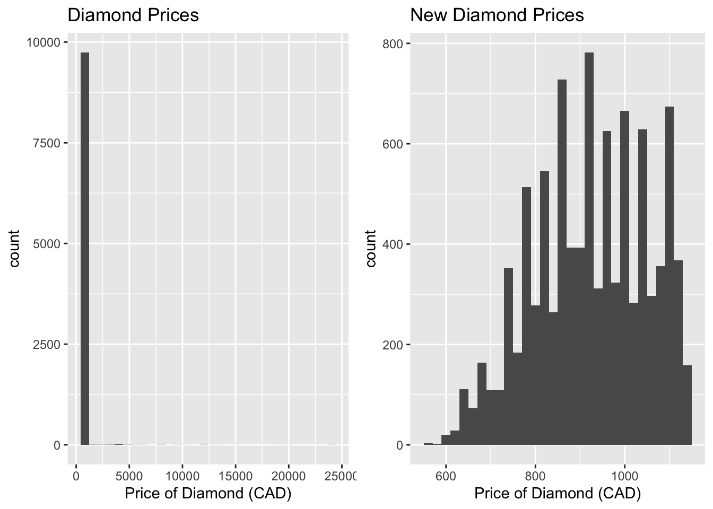
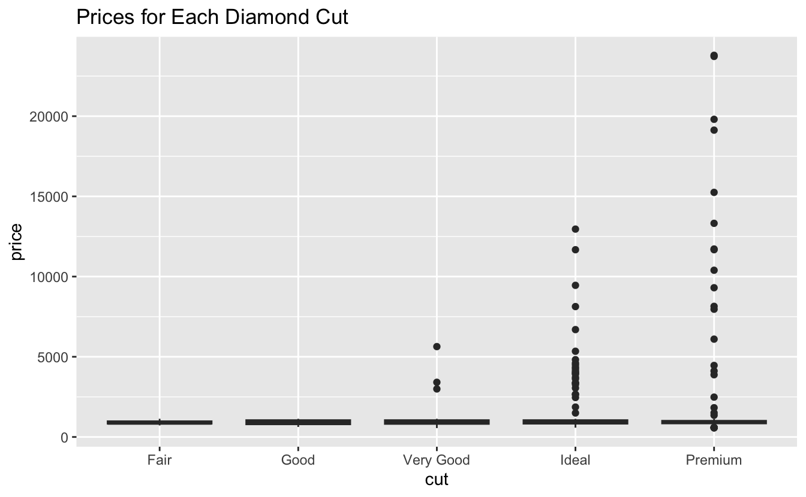
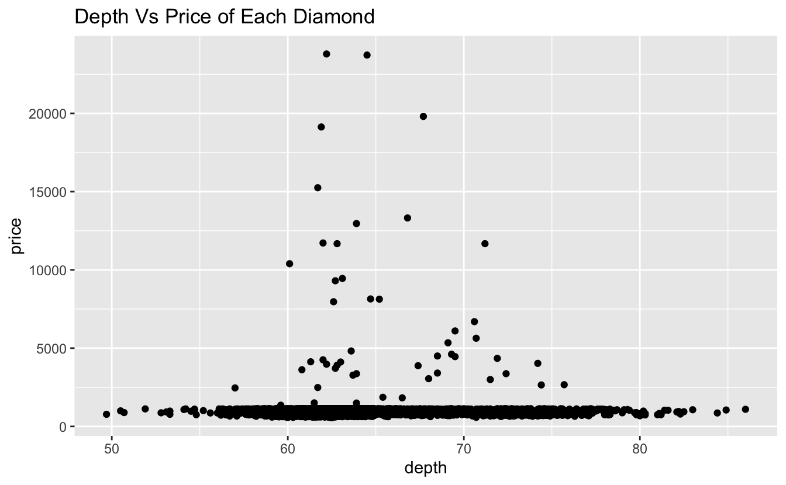
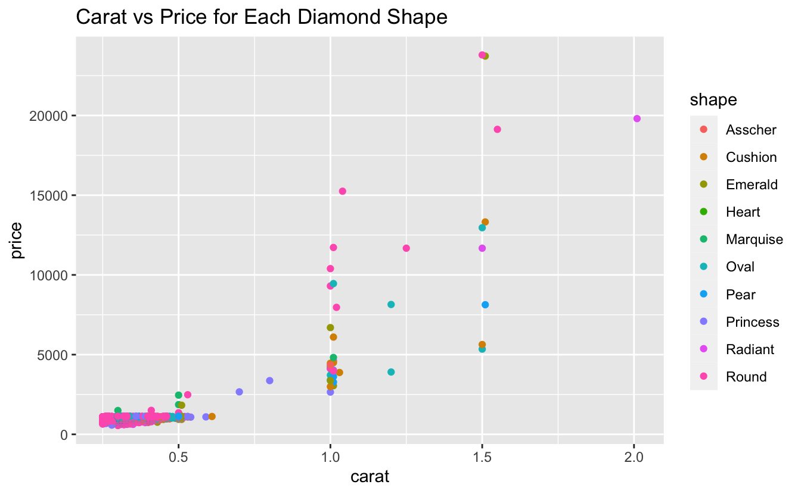

Examining the relationship between characteristics of a diamond and its price
Introduction
Growing up, it is common to hear my parent’s talking about how much carat a diamond is and then proceeding to say it must be really expensive if they hear a high number. However, there are many more characteristics, such as the quality of the cut, color, clarity, table, and depth that can be taken account into when evaluating a diamond’s value.
For this report, I will be using data scraped from Brilliant Earth. Brilliant Earth is a well-known jewelry company that focuses on ethically sourced and sustainable diamonds, gemstones, and metals. They offer a wide range of engagement rings, wedding bands, and other jewelry that are not only stunning but also socially conscious. On their website, they display a table of available diamonds and their characteristics such as price, shape, carat, quality of the cut, color, clarity, depth, and table. (More details of variables will be discussed in next section)
In this report, I would like to investigate what other qualities, besides from carat, influences a diamond’s value.
Methods
Data Collection
As there are no API or directly downloadable data from Brilliant Earth, I scraped the data in Python, using Python’s Selenium Webdriver to get the dynamic table’s Json object, and using the Json and pandas packages to coerce this data into a data frame.
The table shown below is an example of how the dataset looks like.
- price: price in CAD
- shape: shape of the diamond
- carat: weight of the diamond
- cut: quality of the cut
- color: diamond colour, from J (worst) to D (best)
- clarity: a measurement of how clear the diamond is (SI2(worst), SI1, VS2, VS1, VVS2, VVS1, IF, FL(best))
- table: width of top of diamond relative to widest point
- depth: total depth percentage
Data Cleaning
The data collected seems to be well-formatted and the columns are already selected to be variables of interest during the web scraping process. However, we still need to clean the data for: missing data, duplicates, factorization, and unit. With the is.na() function, we see that there are no missing data. I removed the duplicate observations ith the distinct() function. I replaced cut values ‘Super Ideal’ into ‘Premium’ for simplicity and avoid confusion. Lastly, I used as.factor() to factorize the character variables.
We can see that there are potential outliers from price, carat, table, and depth. Let’s check if these observations were a mistake or not.We can see that even though these observations include values that deviate from the rest by a significant amount, they do not seem to be recorded as a mistake or placeholder for NA values. These outliers may also further help us explain whether or not each separate variable fully contribute to the value of a diamond, which at this stage, does not seem like one variable has a strong correlation with the price alone.
Data Exploration
First, I will create histograms over the continuous variables (price, carat, table, and depth)
We can see that the majority of the diamonds have similar price around 1000 CAD with some pricier diamonds scattered on the right. This may be due to cheaper diamonds being more accessible to both the vendor and customers. However, this is a limitation of our data, which I will discuss more in the limitations section.

The distribution of the carat also appears to be skewed to the right, with a mean of around 0.3. This is also normal as it is more common to see smaller diamonds as it is a rare resource.

The table percentage of the diamond appears to be skewed to the right. I would consider this as normal due to how the diamonds are usually cut to look appealing. The potential outliers of the table could be caused by diamonds having different shapes.
The depth percentage of the diamond appears to be roughly Normal. I would consider this as normal due to how the diamonds are usually cut to look appealing. The potential outliers of the depth could also be caused by diamonds having different shapes.
Next, I will look into how the prices differ based on each group of our factors (Shape, cut, color, and clarity)
We can see that for different shapes, the median price is around the same. The greater price range for round shaped diamond compared to other shapes may be due its high popularity as shown in Table 2.

We can see that even though the different cuts’ median prices are similar, the price range for a premium cut diamond is greater compared to other cuts. This means that there are more variety in terms of price when it comes to having an above very good cut.
We can see that for different color, the median price is around the same. The greater price range for D colored diamond compared to other shapes may be due it being the best possible color, thus having more variability.
We can see that for different clarity, the median price is around the same. We also see that in all clarity levels, there are upper outliers. This means that despite having different clarity levels, there are still a variety of diamonds that are expensive.
Next, I will look into how the prices differ based on continuous variables (table and depth): 
We see that in general, there is a cheap option for all different depths. However, around the mean depth (63%), we see a more more expensive diamond options
We see a pretty similar result as the depth vs price table, where all tables have a cheap option and have a more expensive options around the mean table (59%).
Based on the box plot and scatter plots, we see that there are a variety of diamond prices for each category levels.
Preliminary Results
To be able to find out what other variables influence the value of a diamond, I will create scatter plots of carat and price grouped by each categorical variables (cut, color, clarity, and shape) 
Besides the bottom left corner, we see that there are more Ideal and especially Premium cut diamonds having higher price as carat increases. The Ideal cut diamonds seem to have a linear relationship between carat and price while the premium cut diamonds seem to have an rough exponential relationship between carat and price.
For each clarity level, we see that there is a rough exponential relationship between carat and price.

We see a rough exponential relationship between carat and price for each diamond shape.
Now, we want to check the frequencies between two categorical variables:
We see that a combination of decent to average color (E, F) with below average clarity (SI2, SI1) are preferred more compare to other groups.
We see that above very good cut with below average clarity are preferred more. As the quality of cut increases, there are also more options across all clarity level.
Similar to the last graph, as the quality of the cut increases, the count in each color group increases. However, we do see that the most popular options are above very good cuts with a decent color (E, F).
Conclusions
In this report, my primary guiding question was to investigate what other qualities, besides from carat, of a diamond influences its value.
Based on the scatter plots, we can say that there seems to exist linear or exponential relationships for the categorical variables and price, while more detailed investigation may be needed for continuous variables such as table and depth.
Based on the stacked bar plots, we can see what pair of categories are more popular and which category do people care more about (which seems to be cut, color, and then clarity).
Limitations
Overall, the most noticeable limitation of this project is that the diamond prices are not normally distributed. This data majorily consists of cheaper diamonds within a similar range. This may cause some variables being underrepresented when they actually influence the value of a diamond more. This limitation may be caused by how the data was obtained. As the table was a dynamic table, the parsing process was made more difficult as it required more manual work in changing the path to request the data. This may caused us to miss some data that could be crucial to this project.
Future Steps
Although the data we collected from Brilliant Earth did not fully clear up our question of which factors influence the value of a diamond, it still provided interesting and elementary insights.
As aforementioned, the skewness of the price may be a huge problem as I progress through this project. A possible way to solve this issue is by introducing different sources, simulating data, or using bootstrapping methods.
Another area I want to look into is whether popular combinations of diamond characteristics increase its value. As shown in the bar plots of the preliminary results, we see that Premium Cut with SI1 clarity seems to be more popular. Thus, I would want to look into whether a Premium Cut with SI1 clarity has a higher value compared to a less popular combination, ex: Very Good cut with SI1 clarity.